File: 000480.gt.txt (if the image is defective, simply delete all Arabic text and the line will be excluded)
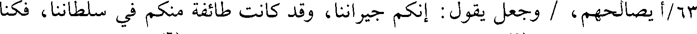
63/أ يصالحهم، / وجعل يقول : إنكم جيراننا، وقد كانت طائفة منكم في سلطاننا، فكنا
File: 000481.gt.txt (if the image is defective, simply delete all Arabic text and the line will be excluded)
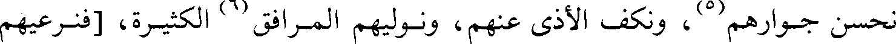
نحسن جوارهم(5)، ونكف الأذى عنهم، ونوليهم المرافق(6) الكثيرة، [فنرعيهم
File: 000482.gt.txt (if the image is defective, simply delete all Arabic text and the line will be excluded)
File: 000483.gt.txt (if the image is defective, simply delete all Arabic text and the line will be excluded)
File: 000484.gt.txt (if the image is defective, simply delete all Arabic text and the line will be excluded)
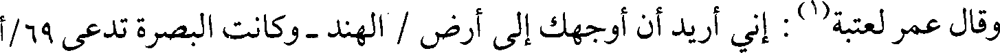
وقال عمر لعتبة(1): إني أريد أن أوجهك إلى أرض / الهند - وكانت البصرة تدعى 69/أ
File: 000485.gt.txt (if the image is defective, simply delete all Arabic text and the line will be excluded)
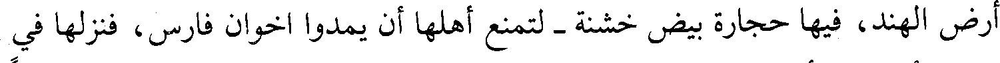
أرض الهند، فيها حجارة بيض خشنة - لتمنع أهلها أن يمدوا إخوان فارس، فنزلها في
File: 000486.gt.txt (if the image is defective, simply delete all Arabic text and the line will be excluded)
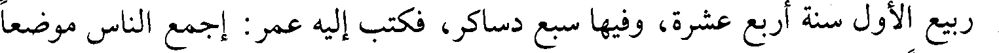
ربيع الأول سنة أربع عشرة، وفيها سبع دساكر، فكتب إليه عمر : اجمع الناس موضعا
File: 000487.gt.txt (if the image is defective, simply delete all Arabic text and the line will be excluded)
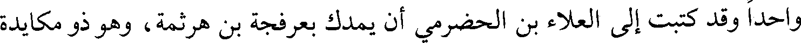
واحدا وقد كتبت إلى العلاء بن الحضرمي أن يمدك بعرفجة بن هرثمة، وهو ذو مكايدة
File: 000488.gt.txt (if the image is defective, simply delete all Arabic text and the line will be excluded)
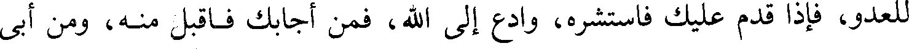
للعدو، فإذا قدم عليك فاستشره، وادع إلى الله، فمن أجابك فاقبل منه، ومن أبى
File: 000489.gt.txt (if the image is defective, simply delete all Arabic text and the line will be excluded)
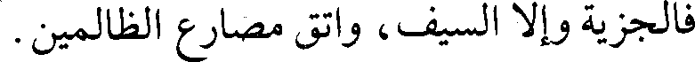
فالجزية وإلا السيف، واتق مصارع الظالمين.
File: 000490.gt.txt (if the image is defective, simply delete all Arabic text and the line will be excluded)
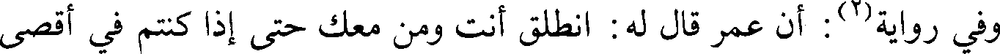
وفي رواية(2): أن عمر قال له : انطلق أنت ومن معك حتى إذا كنتم في أقصى
File: 000491.gt.txt (if the image is defective, simply delete all Arabic text and the line will be excluded)
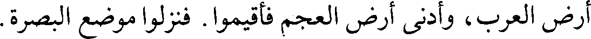
أرض العرب، وأدنى أرض العجم فأقيموا. فنزلوا موضع البصرة.
File: 000492.gt.txt (if the image is defective, simply delete all Arabic text and the line will be excluded)
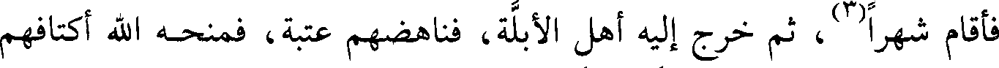
فأقام شهرا(3)، ثم خرج إليه أهل الأبلة، فناهضهم عتبة، فمنحه الله أكتافهم
File: 000493.gt.txt (if the image is defective, simply delete all Arabic text and the line will be excluded)
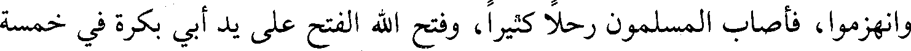
وانهزموا، فأصاب المسلمون رحلا كثيرا، وفتح الله الفتح على يد أبي بكرة في خمسة
File: 000494.gt.txt (if the image is defective, simply delete all Arabic text and the line will be excluded)
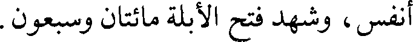
أنفس، وشهد فتح الأبلة مائتان وسبعون.
File: 000495.gt.txt (if the image is defective, simply delete all Arabic text and the line will be excluded)
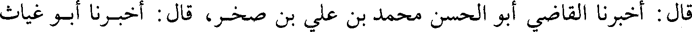
قال : أخبرنا القاضي أبو الحسن محمد بن علي بن صخر، قال : أخبرنا أبو غياث
File: 000496.gt.txt (if the image is defective, simply delete all Arabic text and the line will be excluded)
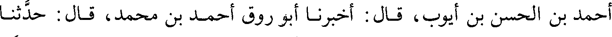
أحمد بن الحسن بن أيوب، قال : أخبرنا أبو روق أحمد بن محمد، قال : حدثنا
File: 000497.gt.txt (if the image is defective, simply delete all Arabic text and the line will be excluded)
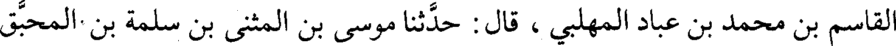
القاسم بن محمد بن عباد المهلبي ، قال : حدثنا موسى بن المثنى بن سلمة بن المحبق
File: 000498.gt.txt (if the image is defective, simply delete all Arabic text and the line will be excluded)
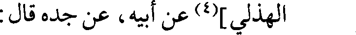
الهذلي](4) عن أبيه، عن جده قال :
File: 000499.gt.txt (if the image is defective, simply delete all Arabic text and the line will be excluded)
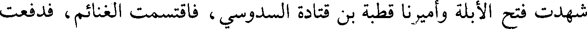
شهدت فتح الأبلة وأميرنا قطبة بن قتادة السدوسي، فاقتسمت الغنائم، فدفعت
File: 000500.gt.txt (if the image is defective, simply delete all Arabic text and the line will be excluded)
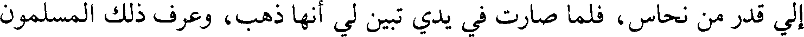
إلي قدر من نحاس، فلما صارت في يدي تبين لي أنها ذهب، وعرف ذلك المسلمون
File: 000501.gt.txt (if the image is defective, simply delete all Arabic text and the line will be excluded)
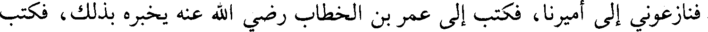
فنازعوني إلى أميرنا، فكتب إلى عمر بن الخطاب رضي الله عنه يخبره بذلك، فكتب
File: 000502.gt.txt (if the image is defective, simply delete all Arabic text and the line will be excluded)
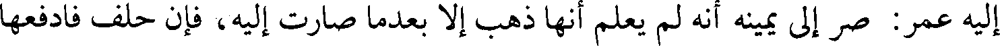
إليه عمر: صر إلى يمينه أنه لم يعلم أنها ذهب إلا بعدما صارت إليه، فإن حلف فادفعها
File: 000503.gt.txt (if the image is defective, simply delete all Arabic text and the line will be excluded)
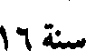
سنة 16
File: 000504.gt.txt (if the image is defective, simply delete all Arabic text and the line will be excluded)
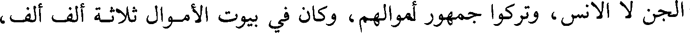
الجن لا الإنس، وتركوا جمهور أموالهم، وكان في بيوت الأموال ثلاثة ألف ألف،
File: 000505.gt.txt (if the image is defective, simply delete all Arabic text and the line will be excluded)
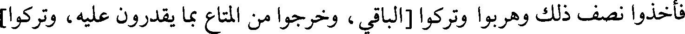
فأخذوا نصف ذلك وهربوا وتركوا[الباقي، وخرجوا من المتاع بما يقدرون عليه، وتركوا]
File: 000506.gt.txt (if the image is defective, simply delete all Arabic text and the line will be excluded)
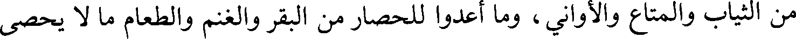
من الثياب والمتاع والأواني، وما أعدوا للحصار من البقر والغنم والطعام ما لا يحصى
File: 000507.gt.txt (if the image is defective, simply delete all Arabic text and the line will be excluded)
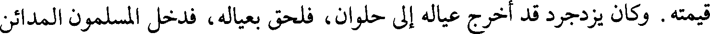
قيمته. وكان يزدجرد قد أخرج عياله إلى حلوان، فلحق بعياله، فدخل المسلمون المدائن
File: 000508.gt.txt (if the image is defective, simply delete all Arabic text and the line will be excluded)
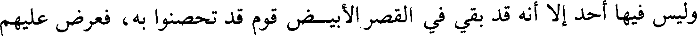
وليس فيها أحد إلا أنه قد بقي في القصر الأبيض قوم قد تحصنوا به، فعرض عليهم
File: 000509.gt.txt (if the image is defective, simply delete all Arabic text and the line will be excluded)
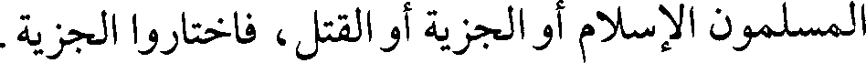
المسلمون الإسلام أو الجزية أو القتل، فاختاروا الجزية.
To Save: `Ctrl+s`, make sure to choose `Webpage, complete`!